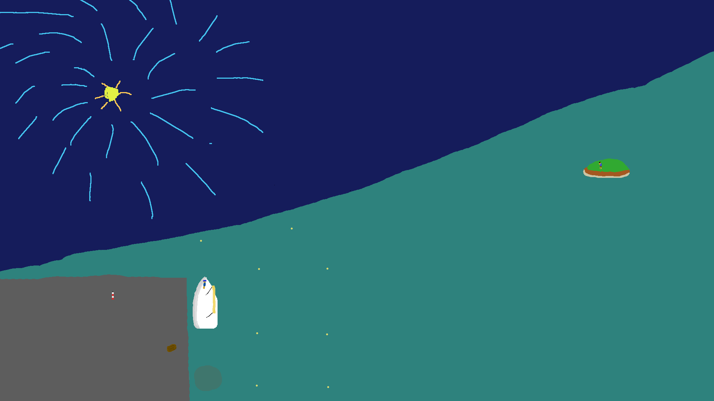

<DOCTYPE html>
<html lang="ja">
  <head>
    <meta charset="utf-8">
    <meta name="viewport" content="width=device-width, initial-scale=1">
    <link href="style.css" rel="stylesheet">
    <title>あつがりあのポートフォリオ</title>
  </head>
  <body>
    <h1>あつがりあ</h1>
    
  </body>

  <h2>about</h2>

  <p>
    あつがりあです。全く得意とは(多分)言えません。
  </p>

  <h3>Profile</h3>
  <ul>
    <li>ニックネーム：あつがりあ</li>
    <li>所在地：日本っぽい</li>
    <li>得意領域：</li>
  </ul>

  <h3>Skills</h3>
  <table>
    <tr>
      <th>OS</th>
      <td>Mac, など</td>
    </tr>
    <tr>
      <th>Engine, Frameworks</th>
      <td></td>
    </tr>
    <tr>
      <th>Tool, MiddleWare</th>
    </tr>
    <tr>
      <th>資格・免許</th>
    </tr>
  </table>

  <h3>Contact</h3>

  <h3>好きな動画</h3>
  <iframe width="560" height="315" src="https://www.youtube.com/embed/8r8O2UCzPmA?si=GiyRI7SxhJswULD4" title="YouTube video player" frameborder="0" allow="accelerometer; autoplay; clipboard-write; encrypted-media; gyroscope; picture-in-picture; web-share" allowfullscreen></iframe>
  <h3>X(旧 Twitter)</h3>
  <a class="twitter-timeline" data-width="400" data-height="600" href="https://twitter.com/atugaria?ref_src=twsrc%5Etfw">Tweets by atugaria</a> <script async src="https://platform.twitter.com/widgets.js" charset="utf-8"></script>


  <h3>Open Processing</h3>
  <iframe src="https://openprocessing.org/sketch/2166703/embed/" width="400" height="400"></iframe>
</html>
